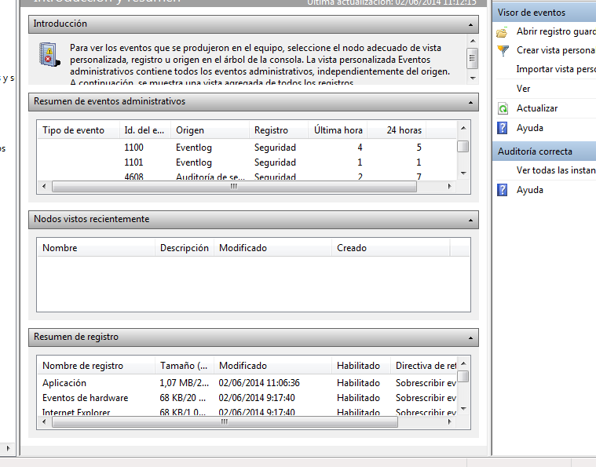
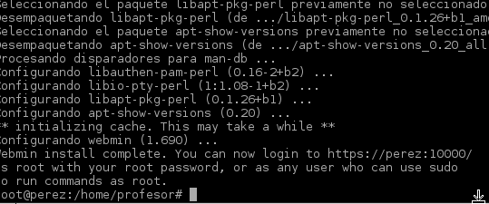
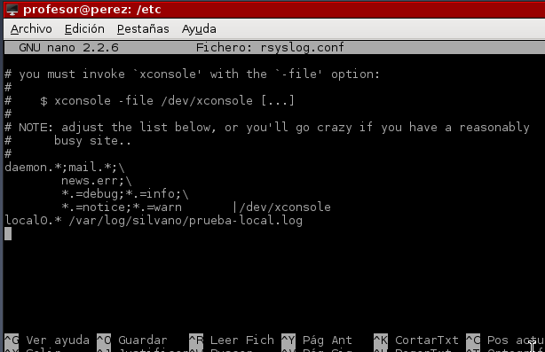
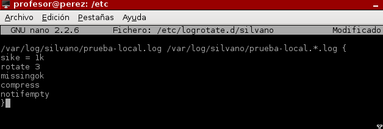

- Módulo: Sistemas Operativos
- Título del trabajo registro de eventos
- Componentes del grupo: Silvano Pérez Yanes
- Curso Académico: 2013/2014
- Fecha de entrega: 16 de Junio de 2014
En este apartado vamos ha activar las directivas de seguridad, para auditar los inicios en el sistema; además creamos dos usuarios con sus claves conrrespondientes, para que luego podamos comprobar que las directivas de seguridad funcionan si entramos de forma incorrecta con las contraseñas; una vez comprovado dichos procesos, nos vamos al fichero de eventos de windows y comprovamos que los eventos con los inicios de seción se han llevado a cabo.
En este caso, vamos a ver los registros de eventos con un programa de navegador para ver los ficheros log; para ello instalamos el programa webmin que nos permitira ver dichos ficheros mediante localhosts
Ahora vamos, a ver los registros de Linux con comandos, con los ficheros rsyslog, para ellos nos vamos al fichero de configuración rsyslog.conf, y escribir una linea; reiniciar los servicios rsyslog. Luego creamos unos registros para comprovar que los registros ocupan espacio.
Ahora vamos a configurar el fichero logrotate para generar rotaciones en el fichero log; creamos un nuevo fichero en logrotate para luego escribir unas lineas en ella; al terminar usamos un script de mensages para el log; y para finalizar escribimos unos comandos para aumentar el tamaño del fichero log.
